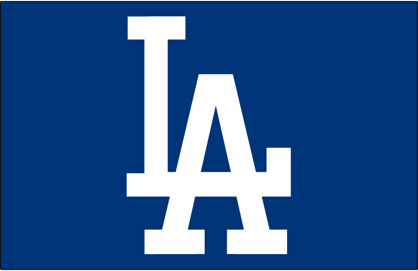
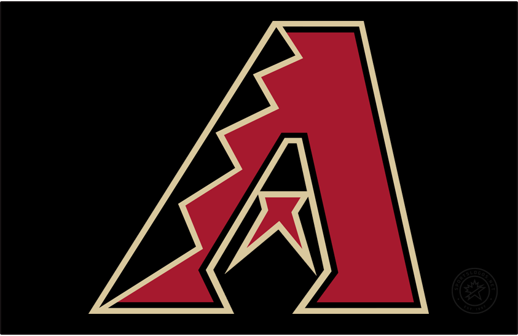

The NL West started in 1969. The Los Angeles Dodgers, San Francisco Giants, San Diego Padres, Atlanta Braves (weird, I know), Cincinnati Reds, and Houston Astros were placed here that year. The Braves moved to the NL East in 1994, and the Reds and Astros moved to the NL Central that year too. The Colorado Rockies joined the league in 1993 and were placed in the NL West. The Arizona Diamondbacks joined the league in 1998 and were placed in the NL West too.
Since the 1994 re-alignment, 5 World Series titles have been won by teams in the NL West. The Diamondbacks won in 2001, the Giants won in 2010, 2012, and 2014, and the Dodgers won in 2020. They had also won 5 pennants without World Series titles. The Padres won in 1998, the Giants won in 2002, the Rockies won in 2007, and the Dodgers won in both 2017 and 2018.
Since 2013, the division has been heavily dominated by the Dodgers. From 2013-20, they had won 8 straight division titles before the Giants took the division in 2021, with the Dodgers finishing one game behind them for the division title. They played each other in the National League Division Series that year, with the Dodgers taking the series in 5 games. The Diamondbacks last made the postseason in 2017, getting swept by the Dodgers in the NLDS. The Rockies last made the postseason in 2018, getting swept by the Milwaukee Brewers in the NLDS. The Padres made the postseason this year, eliminating the New York Mets and the Dodgers before losing in the National League Championship Series to the Philadelphia Phillies in 5 games.
2022 division standings:
| Place | Team | Record | Postseason |
|---|---|---|---|
| 1 | LA Dodgers | 111-51 | Lost NLDS (San Diego) |
| 2 | 89-73 | Lost NLCS (Philadelphia) | |
| 3 | San Francisco | 81-81 | Did not qualify |
| 4 | Arizona | 74-88 | Did not qualify |
| 5 | Colorado | 68-94 | Did not qualify |